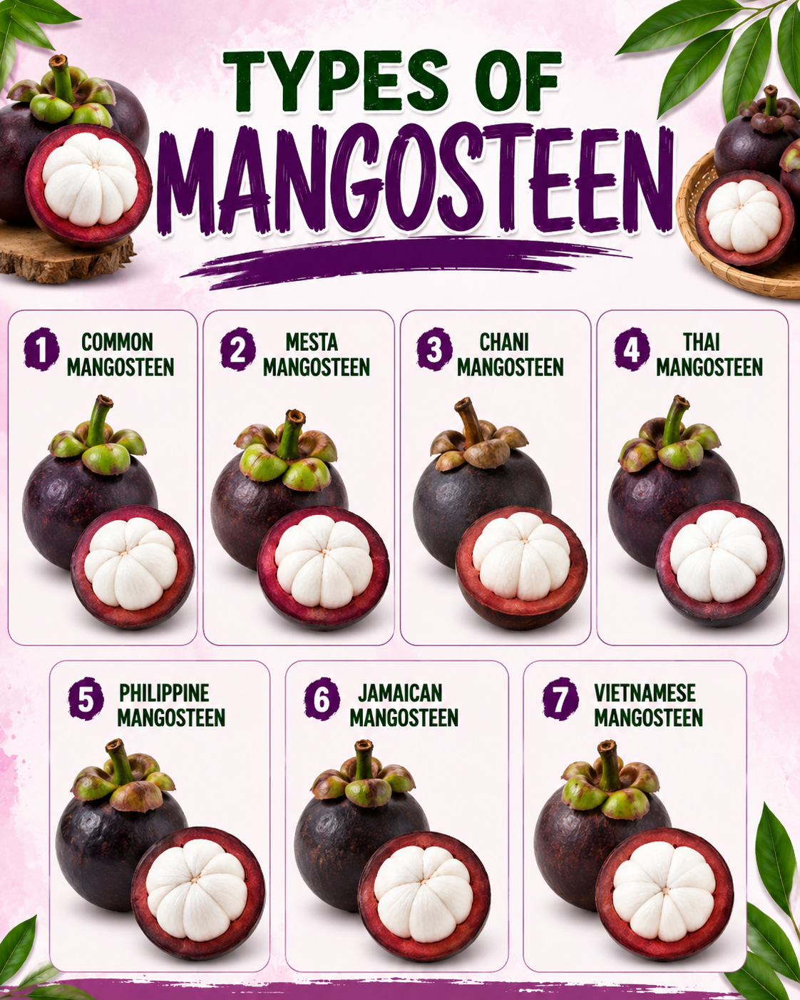
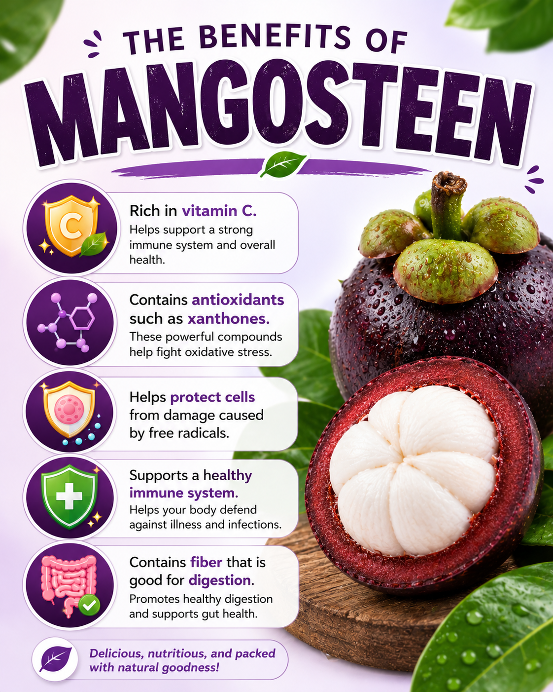

HISTORY
Mangosteen (Garcinia mangostana) is believed to have originated in Southeast Asia, particularly in countries such as Malaysia, Indonesia, and Thailand, where it has been cultivated for hundreds of years. The fruit became popular because of its sweet, juicy white flesh and thick purple rind, earning it the nickname “The Queen of Fruits". Over time, mangosteen spread to other tropical regions through trade and cultivation. Today, it is widely grown in Southeast Asia and is valued not only for its delicious taste but also for its nutritional benefits and importance to the agricultural economy.

TYPES OF MANGOSTEEN
- Common
- Mesta
- Chani
- Thai
- Philippine
- Jamaican
- Vietnamese
HEALTH BENEFITS
- Rich in vitamin C – boosts your daily nutrients and energy.
- Contains xanthones – powerful antioxidants found in the rind.
- Protects cells – defends against damage caused by free radicals.
- Supports immunity – strengthens your body's immune system health.
- High in fiber – promotes a healthy gut and good digestion.

HOW TO PLANT MANGOSTEEN
Choose Healthy Seeds
Select fresh, plump seeds from high-quality mangosteen fruits. Plant them immediately as they dry out quickly.
Prepare Rich Soil
Use well-draining, fertile loamy soil rich in organic matter. Ensure the pot or planting hole has good drainage.
Water Regularly
Keep the soil consistently moist but never waterlogged. Young plants need frequent watering to establish roots.
Provide Partial Shade
Protect young saplings from harsh, direct sunlight. Give them filtered shade for the first 2 to 3 years.
Apply Fertilizer
Feed the plant with organic compost or balanced fertilizer every few months to support its slow and steady growth.
FUN FACTS
- Mangosteen is a popular tropical fruit in Malaysia that is known for its sweet and juicy white flesh.
- It is native to Southeast Asia and grows well in Malaysia's warm and humid climate.
- In Malaysia, mangosteen is usually in season from June to August, often at the same time as durian.